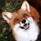

Staň se Huišiškou a sdílej s přáteli
"Sociální síť, kde jsou všichni stejní, a přeci odlišní..."
Spelos

Petr Sedláček - Projekt do TWS I - FPF SLU
"Sociální síť, kde jsou všichni stejní, a přeci odlišní..."
Spelos

fireTF 15 236 120

Opsshoter 14 158 652

Spelos 14 038 469